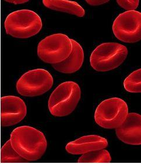
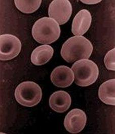
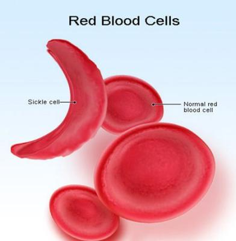
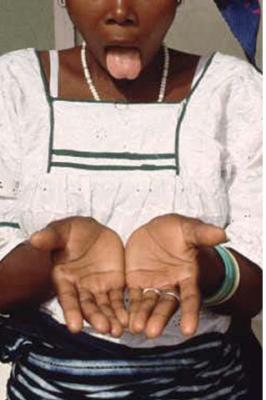
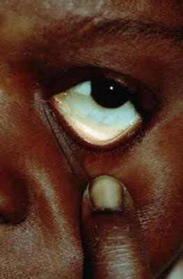
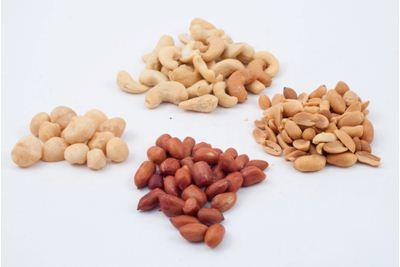

Anaemia
Anaemia
{kind=link}
Introduction
Anemia is a condition that occurs when the number of red blood cells and/or the amount of hemoglobin found in the red blood cells is below normal. Anything that causes a deficiency in the formation or production of red blood cells, or that leads to too rapid destruction of red blood cells can lead to anemia. It is sometimes the detectable sign of arthritis, infection, or certain major illnesses including cancer, drug use, hormonal disorders, chronic inflammation in the body, surgery, peptic ulcers, hemorrhoids, diverticular disease, heavy menstrual bleeding, liver damage and dietary deficiencies.
Blood is comprised of two parts; a liquid part (plasma) and cells (white blood cells, red blood cells and platelets).The red cells are the most numerous and as the name implies are responsible for giving blood its colour. Red blood cells exist only to oxygenate the body and have a life span of about 120 days. If a person lacks sufficient iron, the formation of the red blood cells is impaired
Red blood cells and the hemoglobin (a special pigment contained within them) are necessary for the transport and delivery of oxygen from the lungs to the rest of the body. Without a sufficient supply of oxygen, many tissues and organs throughout the body cannot function properly.
|  |
| Red Blood Cells |
| (c) getty images
|
|  |
| Red Blood Cells |
| (c) getty images
|
Red blood cells are made in the bone marrow (inner part of some bones that make most of the cells in the blood). The hemoglobin molecule is the functional unit of the red blood cells. However, even though the red blood cells are made within the bone marrow, many other factors are involved in their production. For example, iron is a very important component of the haemoglobin molecule; erythropoietin, a special molecule secreted by the kidneys that promotes the formation of red blood cells in the bone marrow.
Preventing anaemia and having the correct number of red blood cells requires cooperation among the kidneys, the bone marrow, and nutrients within the body. If the kidneys or bone marrow are not functioning, or the body is poorly nourished, then normal red blood cell count and function may be difficult to maintain.
Anaemia is actually a sign of a disease process rather than a disease itself. Anemia can be mild, moderate or severe depending on the extent to which the red cell count and/or hemoglobin levels are reduced.
It is usually classified as either chronic or acute. Acute anaemia occurs quickly, for example, in severe bleeding. Chronic anemia may develop slowly over a period of time with long-term illnesses such as diabetes, chronic kidney disease, or cancer. In these situations, the anemia may not be apparent because symptoms are masked by the underlying disease. The presence of anemia in chronic conditions may often go undetected for a period of time and sometimes may only be discovered during tests or examinations for other conditions.
Causes of Anaemia
Common causes of anaemia include the following:
- Anaemia from active bleeding: Loss of blood through deep cut wounds, heavy menstrual bleeding or internal bleeding in perforated gastrointestinal ulcers, injured internal organs following an accident, cancers like colon cancer or even ruptured ectopic pregnancies (located outside the uterus) and miscarriages can cause anaemia.
|  |
| Red Blood Cells |
| (c) MedicineNet 2008
|
- Anaemia related to poor nutrition: Vitamins and minerals are required to make red blood cells. These include iron, vitamin B12 and folate (folic acid). Deficiency in any of these may cause anaemia because of inadequate production of red blood cells. Strict vegetarians are at greatest risk of developing nutritional anaemia. There also may be a problem in the stomach or the intestines leading to poor absorption of vitamin B12. This may lead to anaemia because of vitamin B12 deficiency known as pernicious anaemia. In children and pregnant women especially, the body needs more iron. Pregnant and nursing women frequently develop this deficiency since the baby requires large amounts of iron for growth. Lack of iron can lead to low birth weight babies and premature delivery. Newborns who are nursing from deficient mothers tend to have iron deficiency anemia as well.
- Anaemia of chronic disease: Any long-term medical condition can lead to anaemia. These include cancers, kidney disease, thyroid problems, liver disease and chronic (long-standing) infections such as HIV infection. The kidneys release a hormone called the erythropoietin that helps the bone marrow make red blood cells. In people with chronic kidney disease, the production of this hormone is reduced, and this in turn reduces the production of red blood cells, causing anaemia.
- Anaemia related to pregnancy: Water weight gain during pregnancy dilutes the blood, which may be reflected as anaemia. Also of note is the earlier stated ruptured ectopic pregnancies and miscarriages.
- Sickle cell anaemia: Sickle cell anemia is a disease passed down through families in which red blood cells form an abnormal crescent shape. (Red blood cells are normally shaped like a disc.) Sickle cell anemia is caused by an abnormal type of hemoglobin called hemoglobin S. Hemoglobin is a protein inside red blood cells that carries oxygen. Hemoglobin S changes the shape of red blood cells, especially when the cells are exposed to low oxygen levels. The red blood cells become shaped like crescents or sickles. The fragile, sickle-shaped cells deliver less oxygen to the body's tissues. They can also get stuck more easily in small blood vessels, and break into pieces that interrupt healthy blood flow. Sickle cell anaemia is inherited from both parents. If you inherit the hemoglobin S gene from one parent and normal hemoglobin (A) from your other parent, you will have sickle cell trait. People with sickle cell trait do not have the symptoms of sickle cell anemia.
- Alcoholism: Poor nutrition and resultant deficiencies of vitamins and minerals are associated with alcoholism. Alcohol itself may also be toxic to the bone marrow and may thus slow down the red blood cell production. The combination of these factors may lead to anaemia in alcoholics.
- Hemolytic anaemia: is a condition in which there are not enough red blood cells in the blood, due to the premature destruction of red blood cells. There are a number of specific types of hemolytic anaemia, which are described individually. Hemolytic anemia occurs when the bone marrow is unable to increase production to make up for the premature destruction of red blood cells. If the bone marrow is able to keep up with the early destruction, anemia does not occur (this is sometimes called compensated hemolysis).
There are many types of hemolytic anaemia, which are classified by the reason for the premature destruction of red blood cells. The defect may be in the red blood cell itself (intrinsic factors), or outside the red blood cell (extrinsic factors).
Intrinsic factors are often present at birth (hereditary). They include: Abnormalities in the proteins that build normal red blood cells, Differences in the protein inside a red blood cell that carries oxygen (hemoglobin).
Extrinsic factors include: Abnormal immune system responses, Blood clots in small blood vessels, Certain infections, Side effects from medications. - Heavy metal poisoning: Lead exposure is toxic to the bone marrow, leading to fewer red blood cells. Lead poisoning occurs in adults from work-related exposure and in children who eat paint chips. Improperly glazed pottery can also taint food and liquids with lead.
- Drugs: These include some of those used in management of HIV and some oral contraceptives.
- Smoking
Symptoms of Anaemia
Anaemia symptoms can easily be go unrecognized. The fist signs of developing anaemia maybe loss of appetite, constipation, headaches, irritability, and or difficulty in concentration.
|  |
| Symptoms of anaemia |
| (c) Institute of Child Health UNHCR
|
|  | |
| Symptoms of anaemia | |
| (c) Institute of Child Health UNHCR
|
- Constantly feeling tired/fatigue
- Coldness of the extremities
- General weakness
- Paleness of the skin especially palms and soles, tongue/mouth and inner part of eyelid
- Shortness of breath / rapid breathing even with mild exertion
- Light-headedness - in some cases, one may even faint
- Rapid heart rate or beating irregularly
- Change in stool colour which may become black or maroon or even visibly bloody in gastrointestinal bleeding. In addition stool is foul smelling and sticky.
- In severe cases, chest pain and even heart attacks
- Yellow skin (jaundice) if anaemia is due to red blood cell breakdown
- Brittle or spoon-shaped nails
- Swollen or sore tongue
- Cracks or ulcers at the corners of the mouth
- Craving to eat unusual non-food substances such as rocks or dirt (also known as "pica")
- Numbness and tingling in hands and feet
- In women cessation of the menstruation
- Anemia has also been linked to loss of libido
Treatment of Anaemia
Anaemia should always be investigated and cause determined before any treatment can be prescribed. If you are anemic and your diet is ironclad (sufficient in iron) then a simple blood test called Erythrocyte sedimentation rate (ESR) should be done to investigate inflammation in the body.
In nutrition-related anemia, which is the focus of this article, supplements of iron and folic acid may be given, but in addition one must adjust their diet. People with Alpha-thalaceamia should not take iron supplements; this is because their cells are too small to absorb iron and are like to suffer Iron poisoning. All types of anemia must be treated by a qualified health professionals. Diet only may not treat anemia fully.
Below is an illustrated list of the various foods rich in iron, Vitamin B12 or folic acid.
Iron rich foods:
| spinach |
| (c) Biovision
|
 |
| Beans |
| (c) Biovision
|
|  |
| Nuts |
| (c) Biovision
|
| Kale |
| (c) Biovision
|
Foods that are a good source of iron include:
- liver (best source), kidney, heart
- lean red meats, including beef, pork, lamb
- seafood, such as oysters, clams, tuna, salmon, sardines (omena) and shrimp
- beans, including kidney, lima, navy, black, pinto, soy beans, and lentils
- iron fortified whole grains, including cereals, breads, rice, and pasta
- dark green vegetables including kale (sukumawiki), spinach, amaranth (terere), managu and other vegetables like broccoli, asparagus, parsley, brussel sprouts
- chicken and turkey
- nuts
- egg yolks
- dried fruits, such as raisins, prunes, dates and apricots
Vitamin C can help your body absorb iron, so it is a good idea to pair iron-rich foods with foods that have a lot of Vitamin C, including citrus fruits and iron-fortified orange juice.
It should also be noted that it is harder for the body to absorb the iron that is found in fruits, vegetables, and grains, than it is for it to absorb iron that is found in animal foods, including red meats, poultry.
Examples of iron rich foods which we can get in our daily diet:
| Food | Serving | Iron content mg |
| Beef | 90 grams cooked | 2.32 |
| Chicken, dark meat | 90 grams, cooked | 1.13 |
| Oysters | 6 medium | 5.04 |
| Shrimp | 8 large, cooked | 1.36 |
| Tuna, light | 90 grams, canned | 1.30 |
| Black-strap molasses | 1 tablespoon | 3.50 |
| Raisin bran cereal | 1 cup, dry | 5.79-18.00 |
| Raisins, seedless | 1 small box (1.5 ounces) | 0.81 |
| Potato, with skin | 1 medium potato, baked | 1.87 |
| Kidney beans | 1/2 cup, cooked | 3.30 |
| Lentils | 1/2 cup, cooked | 3.30 |
| Cashew nuts | 90 grams | 1.89 |
*A 90 gram serving of meat is about the size of a deck of cards.
Recommended Dietary Allowance (RDA) for Iron
| Life Stage | Age | Males (mg/day) | Females (mg/day) |
| Infants | 0-6 months | 0.27 | 0.27 |
| Infants | 7-12 months | 11 | 11 |
| Children | 1-3 years | 7 | 7 |
| Children | 4-8 years | 10 | 10 |
| Children | 9-13 years | 8 | 8 |
| Adolescents | 14-18 years | 11 | 15 |
| Adults | 19-50 years | 8 | 18 |
| Adults | 51 years and older | 8 | 8 |
| Pregnancy | all ages | - | 27 |
| Breast-feeding | 18 years and younger | - | 10 |
| Breast-feeding | 19 years and older | - | 9 |
Foods rich in vitamin B12
Meat: liver (best source); beef/mutton; chicken; pork/ham; fish; whole egg
Dairy products: milk; cheese; yoghurt; fermented milk (maziwa mala)
Dairy products: milk; cheese; yoghurt; fermented milk (maziwa mala)
| Food | Serving | Vitamin B12 (mcg) |
| Clams (steamed) | 90 grams | 84.0 |
| Mussels (steamed) | 90 grams | 20.4 |
| Crab (steamed) | 90 grams | 8.8 |
| Salmon (baked) | 90 grams* | 2.4 |
| Rockfish (baked) | 90 grams | 1.0 |
| Beef (cooked) | 90 grams | 2.1 |
| Chicken (roasted) | 90 grams | 0.3 |
| Turkey (roasted) | 90 grams | 0.3 |
| Egg (poached) | 1 large | 0.6 |
| Milk (skim) | 1/4 liter (1 soda bottle) | 0.9 |
| Brie (cheese) | 30 grams | 0.5 |
*A 90 gram serving of meat or fish is about the size of a deck of cards.
How much Vitamin B12 do you need?
Recommended Dietary Allowance (RDA) for Vitamin B12
| Life Stage | Age | Males (mcg/day) | Females (mcg/day) |
| Infants | 0-6 months | 0.4 | 0.4 |
| Infants | 7-12 months | 0.5 | 0.5 |
| Children | 1-3 years | 0.9 | 0.9 |
| Children | 4-8 years | 1.2 | 1.2 |
| Children | 9-13 years | 1.8 | 1.8 |
| Adolescents | 14-18 years | 2.4 | 2.4 |
| Adults | 19-50 years | 2.4 | 2.4 |
| Adults | 51 years and older | 2.4 | 2.4 |
| Pregnancy | all ages | - | 2.6 |
| Breast-feeding | all ages | - | 2.8 |
Foods rich in folic acid
Meat: liver (best source), chicken gizzards, kidney, egg yolk
Legumes: beans, peas, soya, nuts
Starches: wheat flour, whole grain bread, sweet potato, potato
Fruits and vegetables: spinach, broccoli, kales, cabbage, brussels sprouts, beetroot
Legumes: beans, peas, soya, nuts
Starches: wheat flour, whole grain bread, sweet potato, potato
Fruits and vegetables: spinach, broccoli, kales, cabbage, brussels sprouts, beetroot
| Food | Serving | Folate (mcg) |
| Fortified breakfast cereal | 1 cup | 200-400 |
| Orange juice (from concentrate) | 250 ml (1 soda bottle) | 83 |
| Spinach (cooked) | 1/2 cup | 132 |
| Asparagus (cooked) | 1/2 cup (~ 6 spears) | 134 |
| Lentils (cooked) | 1/2 cup | 179 |
| Garbanzo beans (chick peas)(cooked) | 1/2 cup | 141 |
| Lima beans (cooked) | 1/2 cup | 78 |
| Bread | 1 slice | 20 |
| Pasta (cooked) | 1 cup | 60 |
| Rice (cooked) | 1 cup | 60 |
How much folic acid do you need?
Recommended Dietary Allowance for Folate in Dietary Folate Equivalents (DFE)
| Life Stage | Age | Males (mcg/day) | Females (mcg/day) |
| Infants | 0-6 months | 65 | 65 |
| Infants | 7-12 months | 80 | 80 |
| Children | 1-3 years | 150 | 150 |
| Children | 4-8 years | 200 | 200 |
| Children | 9-13 years | 300 | 300 |
| Adolescents | 14-18 years | 400 | 400 |
| Adults | 19-years and older | 400 | 400 |
| Pregnancy | all ages | - | 600 |
| Breast-feeding | all ages | - | 500 |
If alcohol is contributing to the development of anaemia, then in addition to taking vitamins and maintaining adequate nutrition, alcohol consumption needs to be stopped.
Foods that interfere with Iron Absoption
- Alcohol
- Calcium, vitamin E, zinc, or antacids should not be taken at the same time as iron supplements since they can interfere with iron absorption. (The iron already found in multivitamin supplements seems to pose no problem, however). Foods rich in calcium include milk and milk products.
- Coffee and tea: Coffee contains polyphenols and tea contains tannins, both of which render any iron found in food unusable. It is therefore not advisable to drink tea with food.
- Fibre: Because iron is removed through the stool, do not eat foods high in iron (or take supplements) at the same time as fibre.
Review Process
1. First version supplied by Dr Mukuhi Nganga Aug 2009
2. Formatting by Infonet March 2011 3. Review by Dr Alice Ojwang-Ndong January 2012
Information Source Links
- Kalus Kraemer and Michael B. Zimmermann; Nutritional Anemia; Sight and life Press; Basel, Switzerland.
- Phyllis A. Balch, James F. Balch,; Nutritional Healing , 3rd Edition.
- Marks PW, Glader B. Approach to anemia in the adult and child. In: Hoffman R, Benz EJ, Shattil SS, et al, eds. Hematology: Basic Principles and Practice. 5th ed. Philadelphia, Pa: Elsevier Churchill Livingstone; 2008.
Last updated on:
Tue, 02/27/2018 - 20:39
| Unless otherwise stated, all content on the Infonet Biovision Website is licensed under a Creative Commons License | Disclaimer |